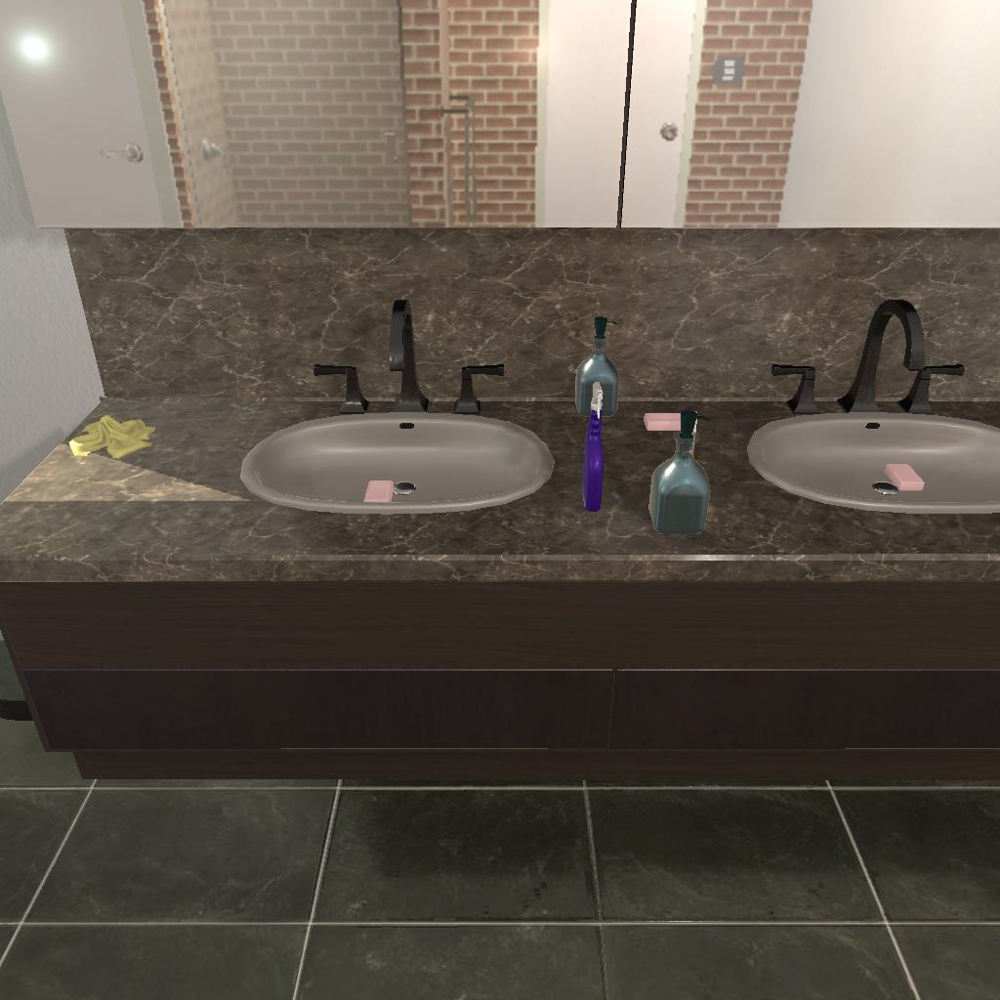
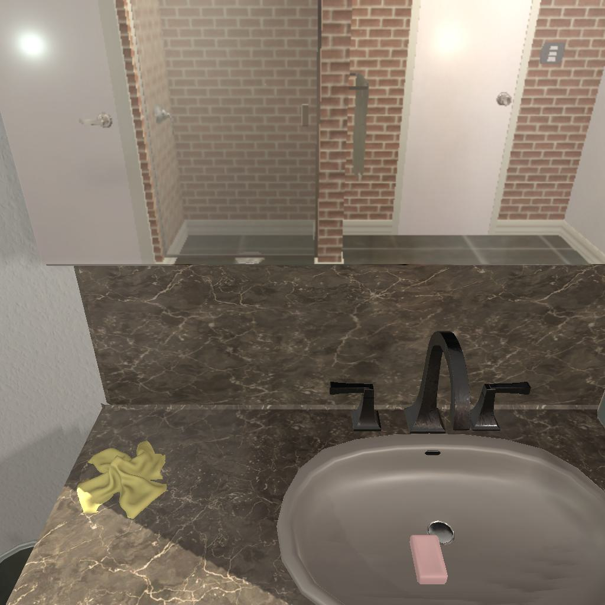

---------------------------------------------------------task: 27---------------------------------------------------------
--------------------------------------------------------------------------------------------------------------------------------------------------------------------
--------------------------------------------------------------------------------------------------------------------------------------------------------------------
Step:--------------------------------------------------------------------------7-------------------------------------------------------------------------------
----------------------------------------
VLM Prompt:
Image1:
Image2:
**Instruction**
1. Analyze the provided images to identify all visible household objects and compare the difference between images (e.h. whether the object is opened or not and taken on hand or not), focusing on those relevant to the task description "find two soapbottle and put them in garbagecan."
2. Use the analysis of images and the task hint "The agent must find an object of the desired type, pick it up, find the correct location to place it, put it down there, then look for another object of the desired type, pick it up, return to previous location, and put it down there with the other object." to answer the question: what is the most reasonable action in the choices for the task description "find two soapbottle and put them in garbagecan"?
3. Decide and write the answer using the template: The answer is: (i): , where i is the real number. If there is no desired object in images, search every place based on **Initial Observation** to find the object. And if no one is exactly correct, choose a similar answer.
**Initial Observation**
You are in the middle of a room. Looking quickly around you, you can see countertop (1), sinkbasin (1-2), sink (1-2), garbagecan (1), drawer (1-2), toilet (1), handtowelholder (1)
**Answer Choices**
(1): go to countertop 1
(2): go to sink 1
(3): go to garbagecan 1
(4): go to drawer 2
(5): go to sink 2
(6): go to sinkbasin 2
(7): go to toilet 1
(8): go to handtowelholder 1
(9): take faucet 1 from sinkbasin 1
(10): take cloth 1 from sinkbasin 1
(11): take soapbar 1 from sinkbasin 1
(12): take soapbottle 2 from sinkbasin 1
(13): examine sinkbasin 1
**Answer**
Let's think step by step by following the instructions.
----------------------------------------
----------------------------------------
Original Response:
First, analyzing the images, we can see in Image 1 there are two soap bottles on the countertop near the sink basins. No objects are being held in hand in any of the images, and the soap bottles are not opened.
Now, considering the task description "find two soapbottles and put them in garbagecan," we should look for actions related to picking up the soap bottles and placing them in the garbage can.
From the initial observation, we know the location of the countertop and the garbage can. To complete the task, the agent would need to go to the countertop, take the soap bottles, and then go to the garbage can to dispose of them.
Looking at the answer choices, the most relevant actions would be:
- Going to the countertop to be near the soap bottles (1).
- Taking the soap bottles (12).
- Going to the garbage can to dispose of them (3).
Since the task requires finding and disposing of two soap bottles, the first action should be to pick up the soap bottles. Therefore, the most reasonable action from the choices would be to take soapbottle 2 from sinkbasin 1, as it is one of the soap bottles visible in the image.
The answer is: (12): take soapbottle 2 from sinkbasin 1.
----------------------------------------
----------------------------------------
>>> Refine Original VLM Response and Get Pure Action: take soapbottle 2 from sinkbasin 1
----------------------------------------
-----------------------------------------------------------------
Running time: 26.57958459854126 seconds
Total Money: 13.999979999999999
-----------------------------------------------------------------
-----------------------------------------------------------------
Text Observation:You pick up the soapbottle 2 from the sinkbasin 1.
-----------------------------------------------------------------
UNSUCCEED